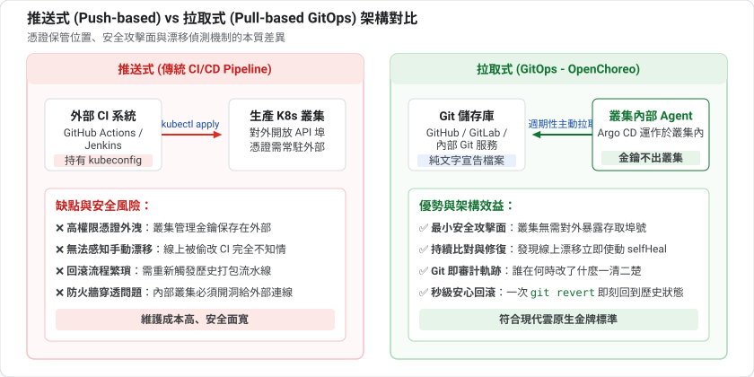
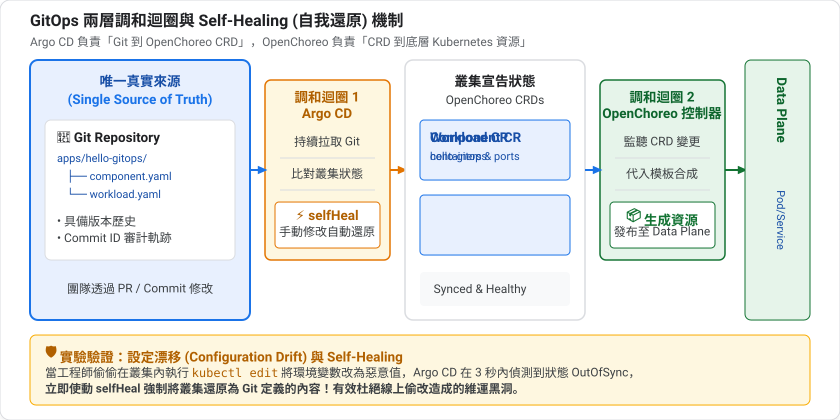
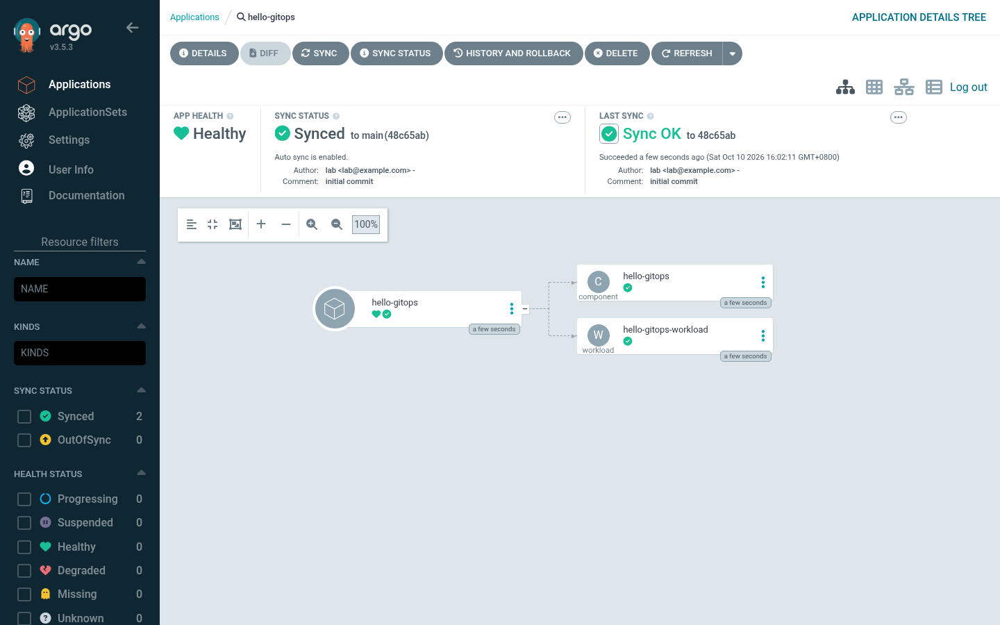
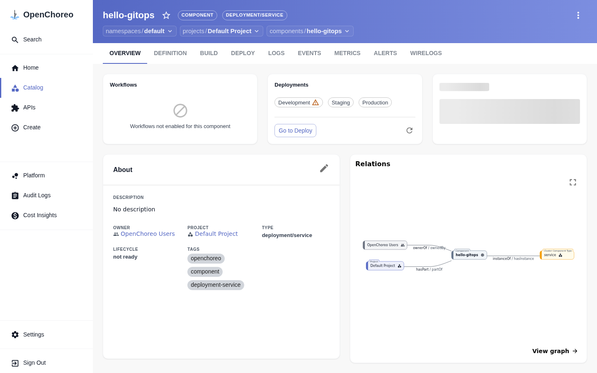
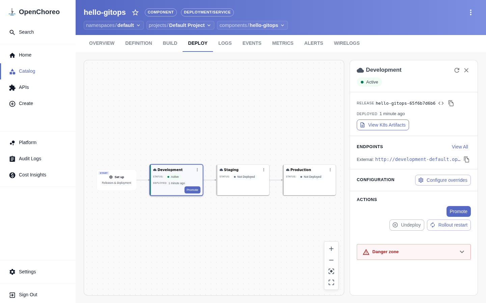

前幾課我們都用 kubectl apply 手動部署。這一課把「期望狀態」放進 Git,讓 Argo CD 持續把叢集調和成 Git 的樣子。
OpenChoreo 的所有資源(Project、Component、Workload...)都是 Kubernetes CRD,所以任何 GitOps 工具都能直接同步它們,不需要特別的整合。
argocd namespace)。第 1 課的 k3d 環境若沒有,請參考 Argo CD 安裝文件git到目前為止,我們都是自己在終端機執行 kubectl apply。這在實驗時很方便,但在團隊裡會遇到問題:
kubectl edit 了線上環境,和文件不一致(設定漂移,configuration drift)GitOps(OpenGitOps 社群定義的原則)主張:
原則 | 意思 |
宣告式 | 系統的期望狀態用宣告方式描述 |
版本化且不可變 | 期望狀態存在 Git,有完整歷史,不能偷改 |
自動拉取 | 軟體代理人自動從 Git 取得最新期望狀態 |
持續調和 | 代理人持續比對實際與期望,發現差異就修正 |
一句話:Git 是唯一的真實來源(single source of truth),叢集只是 Git 的反映。
推送式(傳統 CI/CD) | 拉取式(GitOps) | |
誰動手 | CI 系統執行 | 叢集內的代理人自己去 Git 拉 |
叢集憑證 | 必須交給 CI 系統 | 留在叢集內,不外流 |
發現漂移 | 通常不會 | 持續比對,自動發現 |
回滾 | 重跑舊的流水線 |
|

名詞 | 說明 |
Application | 一個「Git 的某個目錄 → 叢集的某個 namespace」的對應關係 |
Sync(同步) | 把叢集調整成 Git 的樣子 |
Synced / OutOfSync | 叢集和 Git 一致 / 不一致 |
Health | 資源本身是否健康(例如 Deployment 是否就緒) |
selfHeal | 叢集被手動改了,自動還原 |
prune | Git 裡刪掉的檔案,叢集裡的資源也刪掉 |
注意 Sync 與 Health 是兩件事:Synced 只代表「和 Git 一致」,不代表應用正常運作。
這一課很有趣,因為有兩個調和迴圈疊在一起:

兩者都是第 2 課說的「宣告期望狀態、持續調和」,所以能無縫銜接。
很多企業已經導入了 Argo CD 做 GitOps。引入 OpenChoreo 後，團隊常常會問：「兩者有何差別？以後我們到底要在哪裡維護部署這整件事？」
維度 | 傳統 Argo CD GitOps | OpenChoreo + Argo CD 雙層 GitOps |
Git 裡維護什麼 | 上千行原生 K8s YAML（Deployment、Service、Ingress、HPA、NetworkPolicy...）或龐大的 Helm/Kustomize | 極簡的高階業務契約（僅 30~50 行 |
誰寫這些 YAML | 業務開發者必須被迫學習 K8s 網路、探針、安全標籤語法 | 業務開發者只填寫業務參數（映像檔、環境變數、對外埠） |
規範與安全護欄 | 仰賴人工 Code Review 或外掛 OPA/Kyverno 策略檢查 | 平台工程師在 |
開發者除錯視圖 | 只能在 Argo CD 看到龐大複雜的 Pod 樹狀圖，缺少日誌與相依圖 | 開發者在 OpenChoreo Portal 享有專案拓撲、日誌串流與端點一覽 |
apps//component.yaml 與 workload.yaml。若要改映像檔或環境變數，直接開 PR 提交 Git。ComponentType（如 deployment/service）、Trait（監控與儲存附加能力）與 DeploymentPipeline（晉升規則）。如果 Argo CD 已經能負責 GitOps 同步,那為什麼企業還需要 OpenChoreo？答案正是「關聯性 (Relationships & Context)」與「平台抽象治理」！
在傳統 Kubernetes 與 Argo CD 中,所有資源都是孤立的技術積木(Deployment 只是 Deployment,Service 只是 Service,彼此僅靠 label selector 弱關聯)。Argo CD 知道如何把這些 YAML 塞給 K8s,但它完全不知道這些資源在商業與架構上的意義。
OpenChoreo 為 GitOps 注入了四大維度的「語意關聯性」:
關聯維度 | 傳統 Argo CD 看到的 | OpenChoreo 賦予的業務關聯 |
1. 領域架構關聯 | 幾十個扁平的 Pod 與 Service,看不出誰呼叫誰 |
|
2. 環境晉升關聯 | 每個環境一個獨立資料夾,各環境間缺乏關係 |
|
3. 網路與安全關聯 | 需要維運手寫繁複的 NetworkPolicy 與 Ingress | 意圖即安全: 只要宣告 |
4. 遙測與除錯關聯 | 拋錯時要去 Elasticsearch/Grafana 手動搜尋 namespace | 上下文直達: 在元件頁面點擊 LOGS / METRICS,直接關聯展示該服務的即時日誌與指標,無需跨系統查找。 |
簡言之:Argo CD 負責「無腦且精準地搬運」,而 OpenChoreo 負責「理解架構、賦予關聯、自動治理」！
為了讓這個分工具體有感,我們以真實企業情境「上線一個電商訂單微服務 (order-api)」為例: 此服務需要:
order-api:v1.2payment-service (付款服務)LOG_LEVEL=info【單用 Argo CD (純 K8s / Helm)】 【加入 OpenChoreo 治理】
order-api-gitops/ order-api-gitops/
├── base/ └── apps/order-api/
│ ├── deployment.yaml (~85 行) ├── component.yaml (~15 行)
│ ├── service.yaml (~25 行) └── workload.yaml (~30 行)
│ ├── httproute.yaml (~35 行)
│ ├── networkpolicy.yaml (~45 行) 總計: 2 個檔案、45 行簡潔業務宣告
│ ├── hpa.yaml (~30 行) (開發者不必管底層 K8s 網路與探針)
│ ├── serviceaccount.yaml (~15 行)
│ └── kustomization.yaml (~20 行)
└── overlays/ (dev, staging, prod)
總計: 7+ 個檔案、250+ 行底層 YAML
(開發者必須精通 K8s 全部細節)
開發者必須手動拼湊 Deployment、NetworkPolicy、HTTPRoute:
# 單用 Argo CD: 開發者在 deployment.yaml 中必須自己搞懂探針與安全性
apiVersion: apps/v1
kind: Deployment
metadata:
name: order-api
spec:
replicas: 2
selector:
matchLabels:
app: order-api
template:
metadata:
labels:
app: order-api
spec:
containers:
- name: app
image: company-registry.io/order-api:v1.2
ports:
- containerPort: 8080
livenessProbe: # 漏寫探針，Pod 當掉 K8s 不會重啟
httpGet:
path: /healthz
port: 8080
resources: # 漏寫限制，可能吃垮整個節點
limits: { cpu: 500m, memory: 512Mi }
requests: { cpu: 100m, memory: 128Mi }
securityContext: # 漏寫這段，容器可能以 root 高風險執行
readOnlyRootFilesystem: true
runAsNonRoot: true
runAsUser: 10001
---
# 還要手寫 40 行 NetworkPolicy 才能防止其他非相關 Pod 隨意連入
apiVersion: networking.k8s.io/v1
kind: NetworkPolicy
metadata:
name: order-api-netpol
spec:
podSelector: { matchLabels: { app: order-api } }
ingress:
- from:
- podSelector: { matchLabels: { app: gateway-envoy } }
- podSelector: { matchLabels: { app: payment-service } }
ports: [{ port: 8080, protocol: TCP }]
痛點：全公司 50 個業務開發者都要複製貼上這些代碼。有人探針寫錯、有人忘了配 NetworkPolicy 造成資安漏洞、有人 label 拼錯導致 Service 404。
在 OpenChoreo 模型下，開發者只需寫簡短的業務合約（apps/order-api/）：
# 1. component.yaml: 宣告專案歸屬與採用的平台模板
apiVersion: openchoreo.dev/v1alpha1
kind: Component
metadata:
name: order-api
namespace: default
spec:
owner:
projectName: ecommerce
autoDeploy: true
componentType:
kind: ClusterComponentType
name: deployment/service
---
# 2. workload.yaml: 宣告容器、端點與微服務依賴
apiVersion: openchoreo.dev/v1alpha1
kind: Workload
metadata:
name: order-api-workload
namespace: default
spec:
owner:
componentName: order-api
projectName: ecommerce
endpoints:
http:
type: HTTP
port: 8080
visibility: [external]
dependencies:
endpoints:
- component: payment-service # 只要宣告依賴，平台自動打通安全網路與白名單！
name: http
visibility: project
envBindings:
url: PAYMENT_SERVICE_URL # 自動將被依賴服務的位址注入為環境變數
container:
image: "company-registry.io/order-api:v1.2"
env:
- key: LOG_LEVEL
value: "info"
成果：開發者只需寫 50 行業務相關宣告。底層的健康探針、Envoy 閘道父參照、零信任 NetworkPolicy 白名單與資源限制，全部由平台工程師定義的
ClusterComponentType
自動編譯補齊！（各 CRD 的完整規格手冊，詳見第 2 課 Step 4「開發者資源」與第 9 課微服務章節）。
readOnlyRootFilesystem: true 與 runAsNonRoot: true！」deployment.yaml。若直接用 OPA/Kyverno 策略阻擋，隔天大量開發者的 GitOps 部署直接紅燈報錯，專案嚴重卡關。ClusterComponentType: deployment/service 的 CEL 模板，Argo CD 同步進 Control Plane。全公司 200 個微服務在下一次調和或發布時，自動全部生成符合新規範的 Deployment！業務工程師的 Git repo 完全不需要改動任何一行程式碼！kubectl logs。order-api 與 payment-service 的連線）。ReleaseBinding 的 releaseName 帶有內容雜湊(如 hello-gitops-65f6b7d6b6),是控制器在 Git 之外產生的,你無法事先寫在檔案裡。完整的 GitOps 流程需要工具先把這類檔案產生出來再提交,這也是 OpenChoreo 提供 occ releasebinding generate 的原因。本課聚焦在 Component 與 Workload。
準備好實驗檔案吧。
本課的檔案放在 codelabs/labs/06-gitops/:
06-gitops/
├── git-server.yaml # 叢集內的 Git 伺服器
├── publish.sh # 把 ./repo 推到 Git 伺服器
├── application.yaml # Argo CD Application
├── repo-template/apps/hello-gitops/ # 範本
│ ├── component.yaml
│ └── workload.yaml
└── repo/ # 第一次執行 publish.sh 時由範本複製,並初始化為 git repo
repo/apps/hello-gitops/component.yaml:
apiVersion: openchoreo.dev/v1alpha1
kind: Component
metadata:
name: hello-gitops
namespace: default
spec:
owner:
projectName: default
autoDeploy: true
componentType:
kind: ClusterComponentType
name: deployment/service
repo/apps/hello-gitops/workload.yaml:
apiVersion: openchoreo.dev/v1alpha1
kind: Workload
metadata:
name: hello-gitops-workload
namespace: default
spec:
owner:
componentName: hello-gitops
projectName: default
endpoints:
http:
type: HTTP
port: 9090
visibility: [external]
container:
image: "ghcr.io/openchoreo/samples/greeter-service:latest"
command:
- ./go-greeter
args:
- --port
- "9090"
env:
- key: LOG_LEVEL
value: "info"
這和第 3 課的 YAML 幾乎一樣,差別只是它現在住在 Git 裡。
Positive : 為什麼不把 ReleaseBinding 也放進 Git?因為 ReleaseBinding 的 releaseName 是控制器依內容雜湊產生的(例如 hello-gitops-65f6b7d6b6),事先寫不出來。OpenChoreo 另外提供 occ releasebinding generate 來產生這類檔案,適合搭配完整的 GitOps 目錄結構,本課不涵蓋。
為了讓實驗不依賴外部服務,我們在叢集內用 nginx + git-http-backend 架一個簡易 Git 伺服器(git-server.yaml)。核心是它的啟動腳本:
apk add --no-cache git git-daemon fcgiwrap spawn-fcgi
test -x /usr/libexec/git-core/git-http-backend
Negative : 注意套件名稱。 git-daemon 這個套件很關鍵:新版 Alpine 把 git-http-backend 拆到 git-daemon,只裝 git 的話 nginx 會對所有請求回 403 Forbidden,Argo CD 就會報 failed to list refs: authorization failed: 403 Forbidden。我們的啟動腳本用 test -x 在缺少時直接讓 Pod 失敗,比靜默出錯更容易發現。
另一個陷阱:這個伺服器用 emptyDir 存放 repo,Pod 一重建 repo 就消失,Argo CD 會報同樣的 403。僅供實驗,不要用於正式環境。
套用:
cd codelabs/labs/06-gitops
kubectl apply -f git-server.yaml
kubectl wait --for=condition=Available deploy/git-server -n codelab-git --timeout=180s
publish.sh 會初始化 ./repo 為 Git repo、commit,再打包成 bare repo 複製進 Git 伺服器:
./publish.sh "add hello-gitops"
查看 application.yaml:
apiVersion: argoproj.io/v1alpha1
kind: Application
metadata:
name: hello-gitops
namespace: argocd
spec:
project: default
source:
repoURL: http://git-server.codelab-git.svc.cluster.local/codelab-gitops.git
targetRevision: main
path: apps/hello-gitops
destination:
server: https://kubernetes.default.svc
namespace: default
syncPolicy:
automated:
prune: true
selfHeal: true
欄位 | 意義 |
| 從哪個 repo、哪個目錄讀取期望狀態 |
| 套用到哪個 namespace |
| 偵測到差異就自動同步,不用手動按 Sync |
| Git 裡刪掉的資源,叢集也刪 |
| 叢集被手動改動時,自動還原成 Git 的樣子 |
套用並觀察:
kubectl apply -f application.yaml
sleep 30
kubectl get application hello-gitops -n argocd
kubectl get component,workload -n default | grep hello
預期 Synced 與 Healthy,並看到由 Git 建立的 Component 和 Workload。
Positive : 你沒有執行任何 kubectl apply 去建立 Component。它是 Argo CD 從 Git 讀出來、套用到叢集的。
當 Application 同步成功後，我們可以在兩個系統中看見各自的分工：
1. Argo CD 控制台（Git 同步層）： 在 Argo CD UI 中，可以看到 Application 呈現 Synced 與 Healthy。最值得注意的是：Argo CD 的資源樹只有 Component 與 Workload 兩個節點！ 它完全不需要管理繁雜的底層 Kubernetes 資源：

2. OpenChoreo Portal 門戶（開發者體驗層）： 切換到 OpenChoreo 入口網站，開發者看到的則是直觀的元件全景與相依關係：

切換至 DEPLOY 分頁，OpenChoreo 控制器已自動將 Git 同步進來的版本完成 Development 環境部署（顯示綠色 Active），並提供了一鍵「View K8s Artifacts」與「Promote」晉升功能：

先記下目前的 Release:
kubectl get component hello-gitops -n default -o jsonpath='{.status.latestRelease.name}{"\n"}'
把 LOG_LEVEL 改成 debug,commit 並發佈:
sed -i 's/value: "info"/value: "debug"/' repo/apps/hello-gitops/workload.yaml
./publish.sh "set LOG_LEVEL=debug"
Argo CD 預設每 3 分鐘輪詢一次 Git。為了不等,手動要求重新整理:
kubectl annotate application hello-gitops -n argocd argocd.argoproj.io/refresh=hard --overwrite
sleep 20
kubectl get workload hello-gitops-workload -n default -o jsonpath='{.spec.container.env}{"\n"}'
kubectl get component hello-gitops -n default -o jsonpath='{.status.latestRelease.name}{"\n"}'
預期 LOG_LEVEL 變成 debug,而且 latestRelease 變成新的名稱:Git 的變更 → Workload 更新 → OpenChoreo 產生新的 ComponentRelease → 自動部署到 development。
Positive : 整條鏈是 Git commit → Argo CD → OpenChoreo 控制器 → Release → Data Plane。你只做了最前面的一步。
模擬有人直接動叢集(俗稱 configuration drift):
kubectl patch workload hello-gitops-workload -n default --type json \
-p '[{"op":"replace","path":"/spec/container/env/0/value","value":"error"}]'
kubectl get workload hello-gitops-workload -n default -o jsonpath='{.spec.container.env[0].value}{"\n"}'
這時會看到 error。等 20 秒再看:
sleep 20
kubectl get workload hello-gitops-workload -n default -o jsonpath='{.spec.container.env[0].value}{"\n"}'
kubectl get application hello-gitops -n argocd
預期值被還原成 debug(Git 裡的值),Application 仍是 Synced。
Positive : 這就是 GitOps 的好處:Git 是唯一的真實來源。任何未經 Git 的手動修改都會被撤銷,也留下了完整、可審計、可回溯的變更歷史。
prune: true 的意思是:從 Git 刪掉檔案,Argo CD 會把對應資源從叢集刪掉。
git -C repo rm -r apps/hello-gitops
./publish.sh "remove hello-gitops"
kubectl annotate application hello-gitops -n argocd argocd.argoproj.io/refresh=hard --overwrite
sleep 20
kubectl get component,workload -n default | grep hello || echo "pruned"
Negative : 這一段是依 Argo CD 的 prune 語意撰寫,作者實測環境中沒有執行這個步驟。如果你的結果不同,請檢查 Application 的 syncPolicy.automated.prune,以及 Argo CD 是否因為「刪除所有資源」而停止自動 prune。
先刪 Application,否則 selfHeal 會把資源重建:
kubectl delete application hello-gitops -n argocd
kubectl delete component hello-gitops -n default --ignore-not-found
kubectl delete namespace codelab-git
試著不看上文回答下面的問題;答不出來的,回頭看對應的章節。
selfHeal 與 prune 分別做什麼?git revert。releaseName 含內容雜湊,由控制器在 Git 之外產生,無法事先寫入檔案。你已經:
07:可觀測性 — 啟用 Observability Plane,查看日誌、指標與追蹤。